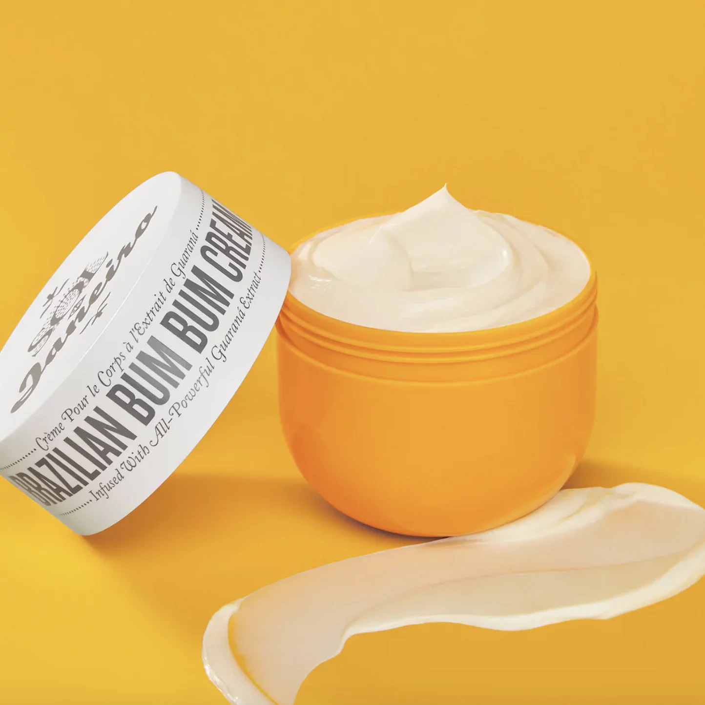

Lotions maintain skin's hydration levels by locking in the moisture, keeping the skin healthy, soft, and supple. Unlike a cream, the lotions are less greasy and have more water content. Here are some of their additional benefits:
Reduce the skin dryness and flaky spots. Skin experts suggest that applying lotion with moisturizer on damp skin right after a shower is beneficial. It gives us a healthy shine and locks the water in our skin to keep it hydrated and moisturized.
Slow down aging signs. Daily use of lotions may slow down wrinkles, rough patches, fine lines, and dryness. However, it is impossible to permanently stop them. Select a lotion with nutrients, such as vitamin A, retinol, vitamin B3, and vitamin B5, to keep your skin firm and youthful.Fight against acne. Sometimes, oil glands overproduce sebum due to hormonal or dietary changes. It clogs the pores of your skin, which leads to acne breakouts. However, if you keep your skin properly hydrated, your oil glands will produce only the necessary amount of sebum. Vitamin C is a potent antioxidant and helps to reduce acne.Lotions also help in soothing sensitive skin.Because lotions are partly water-based, they are often better at penetrating the skin and can deliver nutrition that improves the ability of the skin to maintain moisture.
